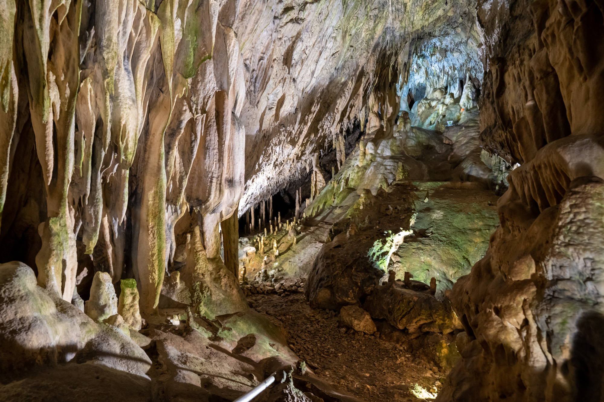

Във Вълшебната зала, сред снежнобели драперии, с изпъстрен като сребро блестящ под и синтови езерца се е приютила Снежанка в очакване на своя принц. Тук са и джуджетата, застинали в захлас. В бялата мраморна кухина водните капки са сътворили хиляди снежнобели сталактити, ресни, окаменени медузи, сребърни свещници, кули и много други причудливи форми. Намерените в пещерата артефакти сочат, че около 600 г.пр.н.е. е обитавана от древните траки. След това е забравена за дълго... До 3 януари 1961 г. когато пещерските туристи и изследователи Борис Евтимов, Генчо Коцев и Жоро Златарев я откриват. Очаровани от снежно бялата и красота я наричат Снежанка.
| Час на влизане | 09:00 | 10:00 | 11:00 | 12:00 | 13:00 | 14:00 | 15:00 | 16:15 |
| Час на излизане | 9:45 | 10:45 | 11:45 | 12:45 | 13:45 | 14:45 | 15:45 | 17:00 |